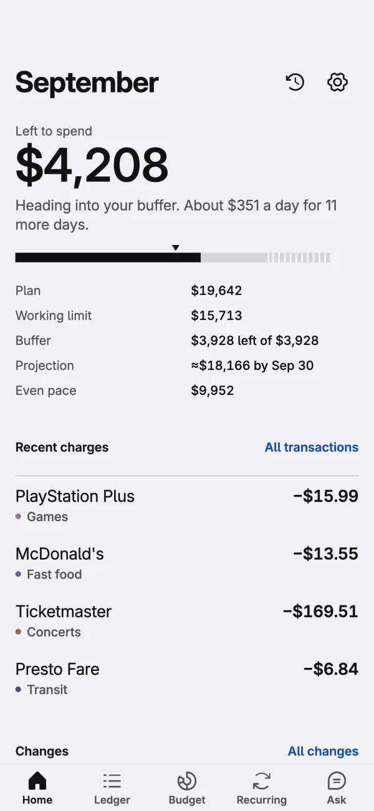
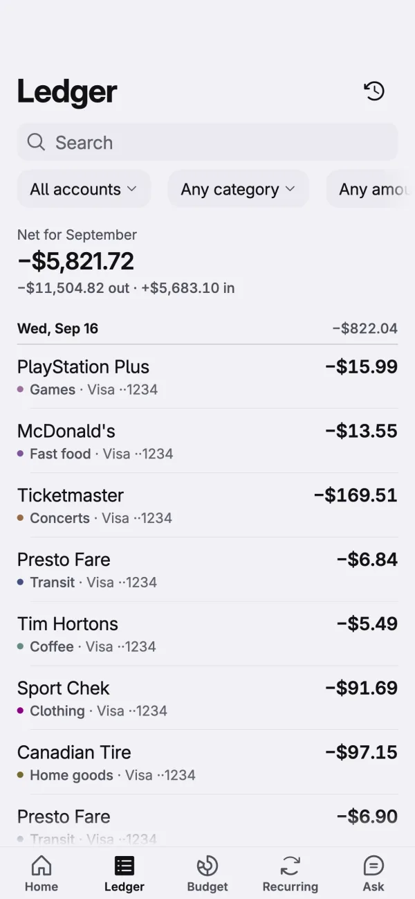
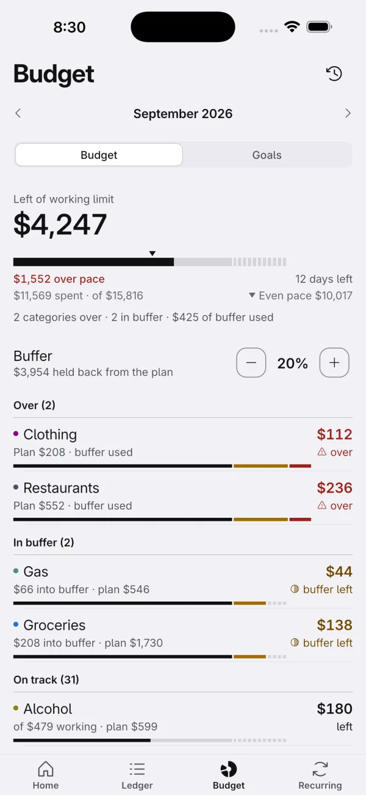
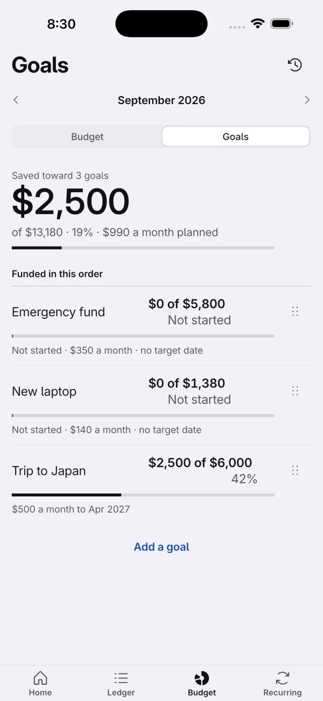
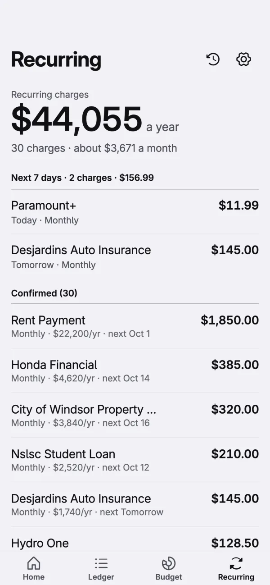
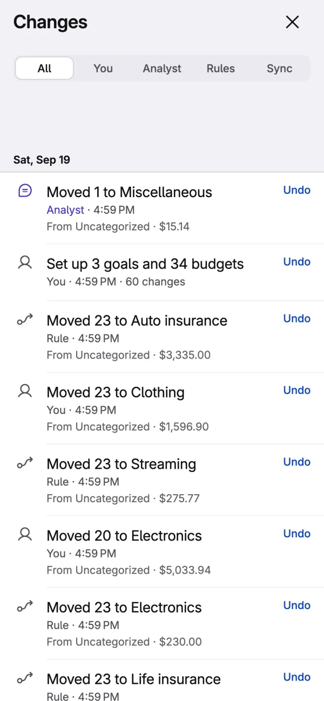

Your money, on your device
Finledger keeps track of your money without sending it anywhere. Your transactions, budgets and goals live on your device, with no account to create and no server to trust.
Download Finledger macOS, Linux and Android now

What it does
Six screens, each answering one question about your money.
One number that matters
A home screen that answers one question: how much is left to spend this month, and whether you are on track. Everything else sits below it, in order.

Every account, one ledger
A ledger that groups your charges by day, with every account in one list, and filters for the times you need them.

Budgets with a buffer
Budgets with a buffer, so a category going over doesn't break the month.

Goals that fill in order
Goals that fill in the order you choose.

Recurring charges, found for you
Recurring charges found for you, with what they cost a year.

Every change is reversible
Everything you do is reversible. Import a file, let a rule run, accept a proposal: it goes in Changes, and one tap puts it back.
An assistant that stays on your device
An AI assistant that runs on your device. Ask it about your spending, and it can propose changes: recategorize a charge, set a budget, adjust a goal. It shows you every change before it happens, and every change it makes lands in Changes with an Undo.
It is off until you turn it on, and it works without ever talking to a server.
Your data stays on your device
Finledger does not collect your data. There is no Finledger account and no Finledger server, so there is nowhere for your information to go.
- Everything lives locally. Accounts, transactions, categories, budgets, goals and the change history are stored in a database file inside the app's own storage.
- iCloud sync is optional. If you turn it on, your data is encrypted on your device before it is sent, with a key held in your device's keychain, so nobody else can read it, including us and Apple.
- The analyst is off by default. Nothing you ask it leaves your device unless you set up a cloud endpoint yourself, and it will always tell you what would be sent first.
- Export or delete anytime. Everything can be exported as CSV or deleted entirely from Settings > Data.
Runs everywhere
Finledger runs on iPhone, iPad, Mac, Windows, Linux and Android, from one codebase, rendered the same way on all five.
- iPhone
- iPad
- Mac
- Windows
- Linux
- Android